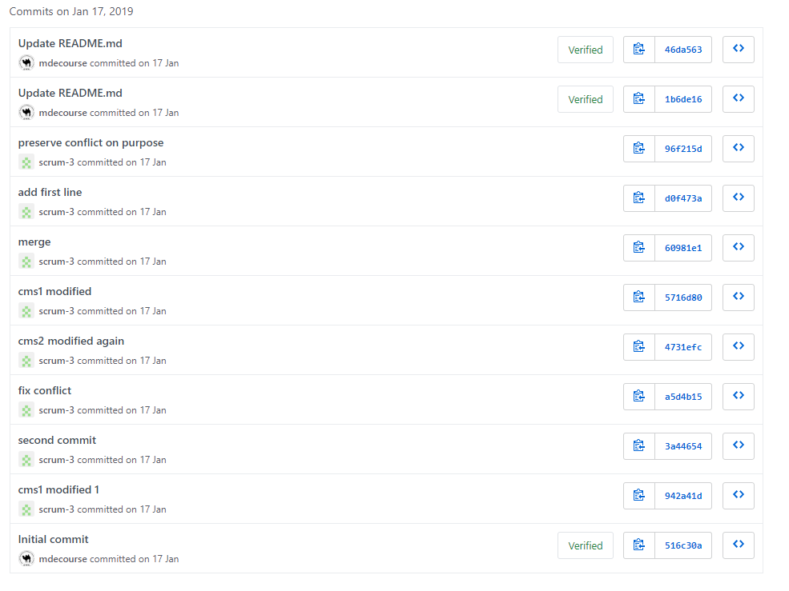

關於proxy設定
到google的設定滑到最下方，按進階，再按proxy設定，點Lan設定就會出現下方的圖片。了解機械設計系電腦輔助設計室電腦的網路設定, 其中包括 IPv4 網路與 IPv6 網路設定.正常情況下, 電腦輔助設計室中的 64 台電腦透過 IPv4 協定下的 DHCP 與 NAT 上網, 各電腦以 DHCP client 取得 192.168.1.* 的網路位址, 然後以 NAT 的一組外部 IP 上網, 通常必須設定 Proxy Server 為 http://proxy.kmol.info:3128 後上網會比較順暢, 但若 8 台 Proxy Servers 無法正常運作時, 則取消 Proxy Server 的設定.
倉儲歷程:從學期初到現在所做的git push還有倉儲改版
